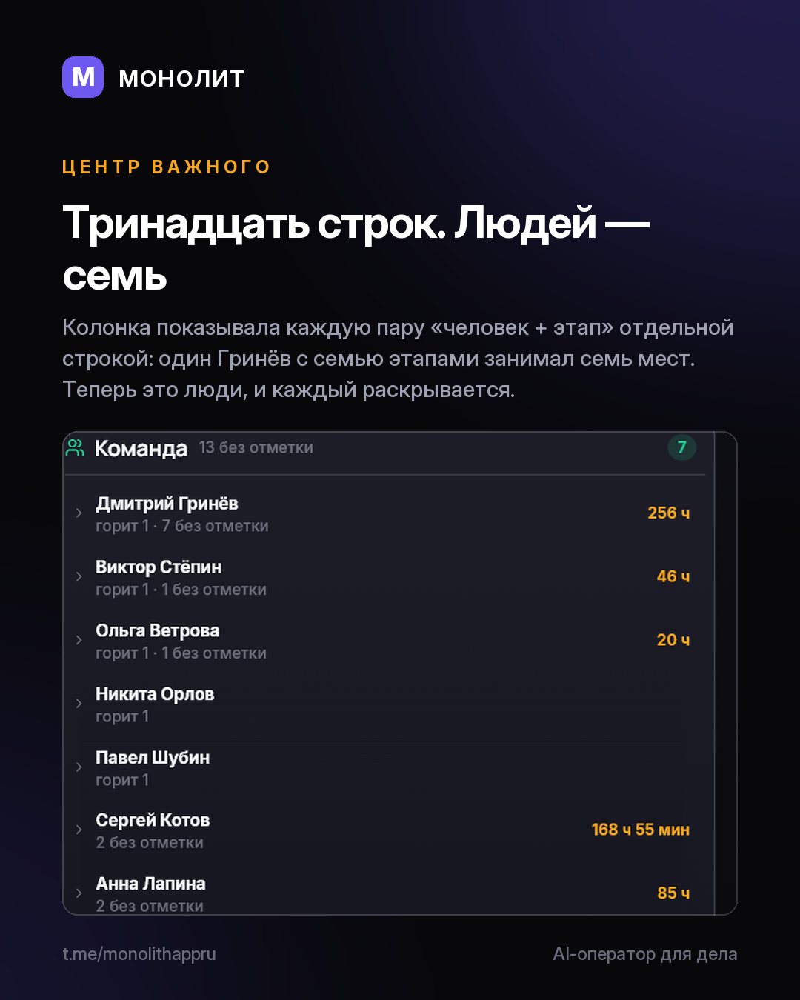

Дневник разработки · 20.08.2026
Список научился чинить, а не жаловаться

Тринадцать строк «сидели, но не отметили». Людей за ними — семь.
«Центр важного» показывал каждую пару «человек + этап» отдельной строкой: один Гринёв с семью этапами занимал семь мест, и список выглядел катастрофой, которой не было.
Теперь колонки отвечают на три вопроса: что сделать, на ком висит, что случилось. И в строке появилось действие. «Готово» закрывает этап прямо из списка и отменяется нажатием — раньше список говорил, что не так, а чинить это надо было в другом разделе.
Экран «Ассистент» переделан по тому же правилу. Он показывал, что ассистент умеет. Теперь показывает, что он сделал: журнал по дням, строка ведёт в заказ или карточку клиента.
Заодно приложение перестало считать одно число дважды. «Долг старше 30 дней» — это часть «просроченных обещаний», а не отдельная новость, а стояли они подряд, двумя строками.
Версия 1.4.24, Windows и Android. Обновление придёт само.
МОНОЛИТ — учёт заказов, клиентов и денег одной фразой. Windows и Android, бесплатная бета.
Скачать Читать канал